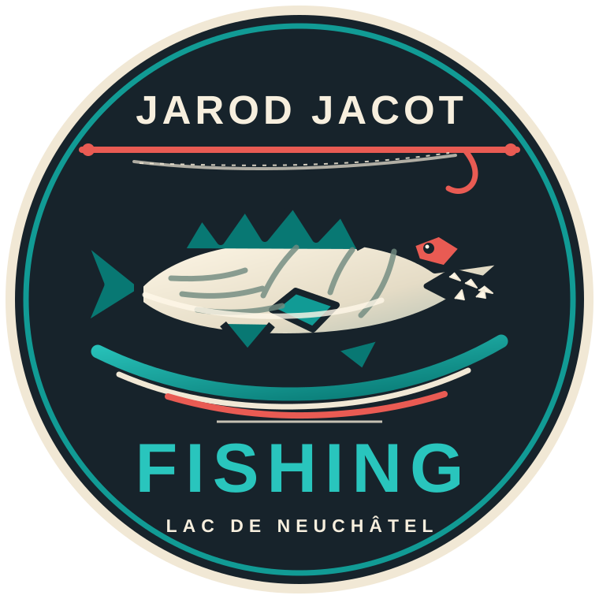

🎣 T-AppMeteo V4
Prévisions, observations et carnet de pêche — les rubriques restent compactes tant que tu ne les ouvres pas.
📍 Lieu pour la météo et les prévisions
Lieu trouvé :
Veux-tu utiliser cette ville pour afficher la météo ?
Le GPS demande l’autorisation du téléphone. Ses coordonnées sont conservées dans ce navigateur, envoyées à OpenStreetMap pour trouver la localité, puis à Open-Meteo pour la météo. La localisation réseau est moins précise : ipapi.co reçoit votre adresse IP pour estimer votre ville.
- Ressenti
- Humidité
- Vent
- Rafales
- Précipitations
- Couverture nuageuse
- Pression
- Évolution sur 3 h
- Soleil
Choisis d’abord ta ville ou ton lieu de pêche ; la météo se charge automatiquement. Tu peux aussi ajouter une localité ou utiliser le GPS/réseau.
🌦️ Conditions météorologiques et observations
Observations de l’eau et du sondeur
Profil : Lowrance Hook 5 HDI. Exemple visible sur ta photo : 14,6 m sous le bateau et 20,3 °C. Saisie manuelle : le navigateur ne lit pas automatiquement l’écran du sondeur.
🐟 Poissons
Espèce recherchée
Les poissons capturés se notent dans « Fin de session » pour alimenter les cumuls, coupes et records personnels.
🎣 Techniques de pêche et matériel
Bibliothèque de leurres
Photographie chaque leurre et renseigne ses caractéristiques pour le retrouver facilement au bord du lac.
Les informations sont celles que tu saisis. Vérifie la profondeur annoncée par le fabricant : elle dépend du montage et de la récupération.
Matériel de pêche
Note le matériel emporté et associe-le à chaque sortie pour retrouver ce qui a été utilisé.
🔄 Synchronisation entre appareils
Synchronisation du carnet et des photos
Configure une adresse HTTPS de serveur privé. L’application synchronisera les sorties, les fiches de leurres, le matériel et les photos dès qu’une connexion est disponible. Le serveur peut être joignable par Wi‑Fi ou via Tailscale sur le réseau mobile.
Synchronisation non configurée. Les données ne quittent pas cet appareil tant qu’une adresse n’est pas renseignée.
Les appareils doivent utiliser le même serveur et le même jeton. Le serveur proposé dans le dépôt s’installe sur un ordinateur ou NAS privé ; l’accès distant peut passer par Tailscale. GitHub Pages seul ne synchronise pas les données. La connexion au serveur est désactivée jusqu’à ta configuration.
🌊 Observations du lac et sources locales
Phase de lune
Calcul…
Indication astronomique ; elle ne garantit pas l’activité des poissons.
Niveau du lac de Neuchâtel
Recherche de la dernière mesure officielle…
Station OFEV de Grandson. La mesure peut avoir un léger délai.
Consulter les mesures hydrologiques de l’OFEVSources météo et pêche complémentaires
Les prévisions Open-Meteo et les mesures disponibles dans l’application restent visibles au-dessus. Ces liens ouvrent des avis externes pour comparaison.
AccuWeather et Windy.app donnent des indications générales, pas une prédiction garantie. Le point Windy sélectionné est Neuchâtel ; Yvonand est indiqué comme spot voisin. Les sources s’ouvrent seulement si tu les sélectionnes, ce qui évite de charger la webcam et les pages externes au démarrage.
📝 Fin de session
Carnet de sortie
🏆 Records personnels par sorte de poisson et pêcheur
Records personnels par espèce et pêcheur
Coupes et poissons d’or
La coupe revient au premier poisson enregistré de chaque espèce. Le poisson d’or atteint le seuil du défi défini ci-dessous; ces seuils sont personnalisables et ne sont pas des normes officielles.
📊 Résumé, retour et informations
Statistiques et conseil de pêche du jour
Les pistes de spot, technique, leurre, animation et profondeur se basent sur les sorties de l’espèce choisie, la météo proche et les observations renseignées. Ce sont des tendances, pas une garantie de prise.
Le carnet et les photos sont conservés sur cet appareil, puis synchronisés entre appareils si un serveur privé a été configuré.